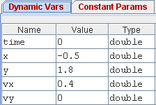
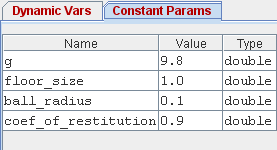
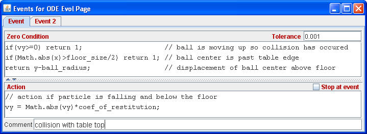

|  |  |
Because the Free Fall 2D model uses 9 variables we have chosen to create two variable tables in Ejs. The table of dynamic variables contains values that evolve in time while the table of constant parameters contains values that remain fixed. Creating separate tables to group variables is an effective way to organize data in Ejs models.
Horizontal motion adds a third differential equation to the Ejs evolution page. We do not include a differential equation for vx because there is no force in the x direction.
Modeling the bounce on a finite table requires that we modify the previous Ejs collision event so that it occurs only when the the ball's x-position is between the table top corners. As in the Free Fall event, a collision occurs only if the ball is moving downward.

Ejs supports multiple events and we have added a corner collision event (Event 2 is not shown here) to the model. If the time evolution produces one or more event triggers, Ejs automatically attempts a smaller time step until it finds a time when the zero condition is satisfied for all events. It is therefore very important that Ejs models be initialized in such a way that all events return positive values when testing the zero condition. Otherwise, Ejs cannot find a valid starting time and the time evolution algorithm will fail.
Tip: You can temporarily disable an event by right clicking on the tab near the top of the events page. Right-clicking within the coding text areas provides context-sensitive help.